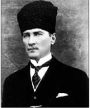
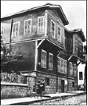
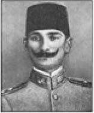
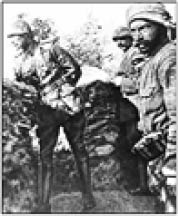
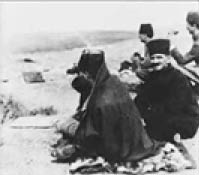
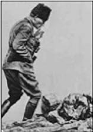
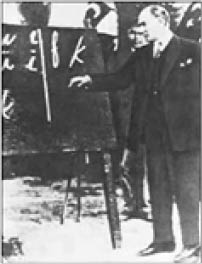
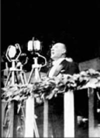
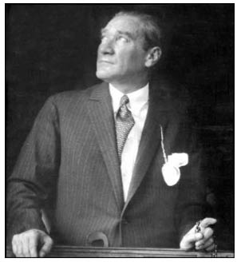

Mustafa Kemal Atatürk
Mustafa Kemal Atatürk (1881-1938)
“Ey Türk Gençliği! Birinci vazifen, Türk istiklalini, Türk Cumhuriyetini, ilelebet, muhafaza ve müdafaa etmektir. ... Muhtaç olduğun kudret, damarlarındaki asil kanda mevcuttur.”
Mustafa Kemal Atatürk 1881 yılında Selanik’te, üç katlı pembe bir evde doğdu. Annesi Zübeyde Hanım’ın isteği üzerine Hafız Mehmet Efendi Mahalle Mektebi’nde öğrenim hayatına başlayan Mustafa, bir süre sonra bu kez babasının isteğiyle daha çağdaş bir eğitim veren Şemsi Efendi Mektebi’ne devam etti.

1888 yılında babasını kaybetti.
Mustafa’nın beş kardeşinden dördü (Fatma, Ahmet, Ömer ve Naciye) küçük yaşta öldü. Sadece kız kardeşi Makbule Hanım 1956 yılına kadar yaşadı.

1893 yılında girdiği Selanik Askeri Rüştiyesi’nde matematik öğretmeni olan Mustafa Bey ona “Kemal” adını ekledi. Manastır Askeri Lisesi’ni, Kara Harp Okulu’nu, ardından Harp Akademisi’ni bitirdi.
1905 yılında Şam’daki 5. Ordu’da yüzbaşı rütbesiyle, 1909’da 31 Mart olayı olarak bilinen ayaklanmayı bastırmak için İstanbul’a gelen Hareket Ordusu’nda Kurmay Başkanı olarak görev yaptı.

Mustafa Kemal 1911 Trablusgarp ve 1912-1914 Balkan
Savaşı’nda başarılı görevlerde bulundu.
1915 Çanakkale Savaşı’nda düşmanın çıkartma yapacağı yer olan Arıburnu’nu daha iyi görebilmek için Conkbayırı’na çıkar. Bu arada 261 rakımlı tepedeki gözetleme bölüğündeki askerler cephaneleri bittiğinden Conkbayırı’na doğru kaçmaktadır. Bunu gören Mustafa Kemal onları hemen durdurur.
“Niye kaçıyorsunuz?”
“Efendim düşman geldi.”
“Nerede?”
“İşte” diye 261 rakımlı tepeyi gösterirler.
Düşman tepeye doğru rahat bir şekilde yaklaşmaktadır. Ve bu önlenemezse Kocaçimen’de emrinde bulunan 57. Alay da yok olma tehlikesiyle karşı karşıyadır.
Mustafa Kemal hiç tereddütsüz askerlere bağırarak:
“Düşmandan kaçılmaz!” der.
“Cephanemiz kalmadı.”
“Cephanemiz yoksa süngümüz var ya!”
Süngü takıp yere yatan askerlerimizi gören düşman birlikleri, neyle karşılaşacaklarını bilmediklerinden, ilerlemeyi durdurup mevzi almak zorunda kalırlar. Daha sonra Mustafa Kemal bu konuyu “İşte kazandığımız an bu andır!” diye yorumlar.
Bu sırada, haber gönderilen 57. Alay da yetişir. Fakat düşman sayıca fazladır ve yeniden ilerlemeye başlamıştır. Bunun üzerine tüm askerlerine süngü taktıran Mustafa Kemal tarihe geçecek emrini verir:
“Ben size taarruzu emretmiyorum; ölmeyi emrediyorum! Biz ölünceye kadar geçecek zaman içinde, yerimizi başka kuvvetler ve başka kumandanlar alabilir.”
Bu taarruzda düşmanın geri çekilmesi sağlanır, fakat 57. Alay tamamen şehit olur. Savaş boyunca Türk askeri 253 bin şehit vererek İtilaf Devletleri’ne “Çanakkale geçilmez!” dedirtir. Fakat 30 Ekim 1918 yılında yapılan Mondros Ateşkesi’yle İtilaf Devletleri, savaşarak geçemedikleri boğazdan rahatça geçerler.
Mustafa Kemal 13 Kasım 1918’de İtilaf Kuvvetleri gemilerinin İstanbul’a girmesi üzerine yanında bulunanlara, ülkenin bağımsızlığa kavuşacağına olan inancını dile getiren şu sözleri söyler:
“Geldikleri gibi giderler!”
Çanakkale Savaşları’nda göğsüne gelen bir şarapnel parçasından cep saati sayesinde kurtulan Mustafa Kemal, ülkenin kurtuluşunu başlatacağı Samsun’a 19 Mayıs 1919’da, 9. Ordu Müfettişi olarak çıkar. Mustafa Kemal Havza ve Amasya Genelgelerinin ardından, Erzurum ve Sivas Kongreleriyle Kurtuluş Savaşı’nda izlenecek yöntemler hakkında kararlar alınmasını sağlar.
23 Nisan 1920’de açılan Türkiye Büyük Millet Meclisi Başkanlığına Mustafa Kemal seçilir. 5 Ağustos 1921’de Mustafa Kemal, Büyük Millet Meclisi tarafından Başkomutan olarak atanır.
“Hattı müdafaa yoktur, sathı müdafaa vardır. O satıh bütün vatandır. Vatanın her karış toprağı vatandaşın kanıyla ıslanmadıkça terk olunamaz.” 54

23 Ağustos’ta başlayıp 13 Eylül’e kadar yirmi iki gün yirmi iki gece devam eden çarpışmalar sonunda Sakarya Zaferi’nin başkomutanına, TBMM’nin çıkardığı bir yasayla, “mareşal” rütbesi ve “gazi” unvanı verilir.
26 Ağustos 1922 tarihinde Mareşal Gazi Mustafa Kemal komutasında başlayan Büyük Taarruz, 30 Ağustos 1922 Dumlupınar Zaferi’nin kazanılmasıyla sonuçlanır. Bu zaferden sonra Türkiye Büyük Millet Meclisi Başkanı ve Başkomutan Mustafa Kemal, Türk topraklarını düşmandan tam olarak temizlemek için şu emri verir:
“Ordular! ilk hedefiniz Akdeniz’dir. ileri!”

Mareşal Gazi Mustafa Kemal Saltanat’ın kaldırılması (1 Kasım 1922), Cumhuriyet’in ilanı (29 Ekim 1923), Halifeliğin kaldırılması (3 Mart 1924), yeni Türk harflerinin kabulü (1 Kasım 1928) başta olmak üzere; siyaset, hukuk, eğitim, kültür, ekonomi alanlarında yaptığı önemli devrimlerle savaşlardaki başarısını devlet idaresine de taşıdı.

Mareşal Gazi Mustafa Kemal’in yıllar önce Türk ulusunu daha üst seviyelere çıkarmak için yaptığı planlar zaman zaman yanında bulunanlara bile fazlasıyla hayal gelmiştir. Mazhar Müfit Kansu hatıratında bu konuyu şöyle anlatıyor:
“Erzurum Kongresi sonrası...
‘Mazhar not defterin yanında mı?’
‘Hayır Paşam!’
‘Zahmet olacak ama, bir merdiveni inip çıkacaksın. Al gel’ dedi.
Defteri getirdiğimi görünce, sigarasını bir iki nefes çektikten sonra:
‘Ama bu defterin bu yaprağını hiç kimseye göstermeyeceksin. Sonuna kadar gizli kalacak. Bir ben, bir Süreyya (Özel Kalem Müdürü), bir de sen bileceksin. Şartım bu!’ dedi.
Süreyya da, ben de:
‘Bundan emin olabilirsin Paşam!’ dedik.
‘Öyle ise tarih koy!’ dedi. Koydum, 7-8 Ağustos 1919 sabaha karşı, ‘Zaferden sonra hükümet biçimi Cumhuriyet olacaktır. Bu bir.
İki; Padişah ve hanedan hakkında zamanı gelince gereken işlem yapılacaktır. Üç: Örtünmek kalkacaktır. Dört: Fes kalkacak, uygar milletler gibi şapka giyilecektir.’
Seneler sonra Çankaya’da yemek esnasında birkaç defa, ‘Bu Mazhar Müfit yok mu? Kendisine Erzurum’da örtünme kalkacak, şapka giyilecek, Latin harfleri kabul edilecek dediğim ve bunları not etmesini söylediğim zaman, defteri koltuğunun altına almış ve bana hayal peşinde koştuğumu söylemişti’ dedi.
Bir gün bana önemli bir ders verdi: Şapka devrimini açıklamıştı, Kastamonu’dan dönüyordu. Ankara’ya döndüğü anda, otomobille eski Meclis binasının önünden geçiyor, ben de kapı önünde bulunuyordum. Manzarayı görünce gözlerime inanamadım. Kendisinin yanında oturan Diyanet İşleri Başkanı’nın başında bir şapka vardı. Kendisi ne ise ne? Fakat kendisini karşılamaya gelenler arasında bulunan Diyanet İşleri Başkanı’na da şapkayı giydirmişti.
Ben hayretlerle bu manzarayı seyrederken, otomobili durdurdu. Beni yanına çağırdı ve ‘Azizim Mazhar Bey, kaçıncı maddedeyiz? Notlarına bakıyor musun?’ dedi.”
29 Ekim 1923 tarihinde Cumhuriyet’in ilanıyla Mareşal Gazi Mustafa Kemal TBMM tarafından ilk cumhurbaşkanı seçildi. 1927, 1931, 1935 yıllarında, dört yılda bir yapılan seçimlerde yeniden cumhurbaşkanlığına seçildi.
Mareşal Gazi Mustafa Kemal Paşa’ya 1926 yılında İzmir’de düzenlenmesi planlanan suikast girişimi önceden haber alınarak önlendi. Büyük Önder bu konuyla ilgili Anadolu Ajansı’na şöyle bir açıklama yaptı:
“Benim naçiz vücudum bir gün elbet toprak olacaktır, fakat Türkiye Cumhuriyeti ilelebet payidar kalacaktır.”
TBMM, Soyadı Kanunu ile 24 Kasım 1934’te Mustafa
Kemal’e “Atatürk” soyadını verdi.

Savaşlar kazanan bir komutan, kitleleri etkileyen bir lider, başarılı bir siyaset ve devlet adamı olan Büyük Önder, Samsun’a çıkışından başlayarak, Kurtuluş Savaşı’nı, Cumhuriyet’in kuruluşu ve devrimlerini “Büyük Nutuk” adlı eserinde topladı.
29 Ekim 1933’te Onuncu Yıl Nutku’nu okudu.
Cumhuriyetçilik, milliyetçilik, halkçılık, devletçilik, laiklik, devrimcilik ilkeleri Türkiye Cumhuriyeti Anayasası’nda 5 Şubat 1937’de yerini aldı.
Hastalığının ilerlemesi üzerine 15 Eylül 1938’de vasiyetini hazırlatan Büyük Önder Atatürk, 10 Kasım 1938’de Dolmabahçe Sarayı’nda saat 09:05’te hayata gözlerini yumdu. Naaşı 10 Kasım 1953’te, ölümünün 15. yılında, geçici istirahatgâhı Etnografya Müzesi’nden alınarak törenle Anıtkabir’e defnedildi.
Atatürk, Cumhurbaşkanı sıfatıyla, Türkiye’yi ziyarete gelen yabancı devlet liderlerini Dolmabahçe Sarayı’nda ağırlıyordu. Konuşma esnasında bir ara Yugoslavya Kralı Aleksandre:
“Ekselans, biz Türkleri çok severiz” dedi. “O kadar çok ki, zamanında Birinci Dünya Savaşı’nın sonunda David Lloyd George (dönemin İngiltere Başbakanı) Batı Anadolu’yu Yunanistan’dan önce bize önermişti. Fakat biz Yugoslavlar, Türkleri çok sevdiğimiz için Lloyd George’un bu önerisini kabul etmedik ve Anadolu seferine çıkmadık.”
Atatürk, konuk kralın sözlerini sakin bir şekilde dinledikten sonra, gülümseyerek şöyle yanıtladı:
“Haşmetmeap, önce bize karşı olan sevginize teşekkür ederiz.
Sonra da büyük geçmiş olsun.”
Mustafa Kemal Atatürk’ten...
“Yurtta sulh, cihanda sulh.”
“Beni görmek demek mutlaka yüzümü görmek demek değildir. Benim fikirlerimi, benim duygularımı anlıyorsanız ve hissediyorsanız bu yeterlidir.”
“Ben zoraki ve insafsız davranmayı bilmem. Ben kalpleri kırarak değil, kazanarak hükmetmek isterim.”
“Özgürlük ve bağımsızlık benim karakterimdir.”
“Hiçbir şeye ihtiyacımız yok, yalnız bir şeye ihtiyacımız vardır, çalışkan olmak!”
“Zafer, ‘Zafer benimdir’ diyebilenindir. Başarı, ‘Başaracağım’ diye başlayanın ve ‘Başardım’diyebilenindir.”

“Bombasırtı olayı (14 Mayıs 1915) çok önemli ve dünya savaş tarihinde eşine rastlanması mümkün olmayan bir olaydır.
Karşılıklı siperler arası mesafe 8 metre, yani ölüm kesin. Birinci siperdekilerin hepsi kurtulmamacasına düşüyor. ikinci si-perdekiler yıldırım gibi onların yerlerine gidiyor. Fakat ne kadar imrenilecek bir soğukkanlılık ve tevekkülle biliyor musunuz?
Bomba, şarapnel, kurşun yağmuru altında öleni görüyor, üç dakikaya kadar öleceğini biliyor ve en ufak bir çekinme bile göstermiyor.
Sarsılma yok. Okuma bilenler Kur’an-ı Kerim okuyor ve cennete gitmeye hazırlanıyor. Bilmeyenlerse Kelime-i Şahadet getiriyor ve ezan okuyarak yürüyorlar. Sıcak cehennem gibi kaynıyor.
işte bu Türk askerindeki ruh kuvvetini gösteren, dünyanın hiçbir askerinde bulunmayan tebrike değer bir örnektir. Emin olmalısınız ki Çanakkale Savaşlarını kazandıran bu yüksek ruhtur.”